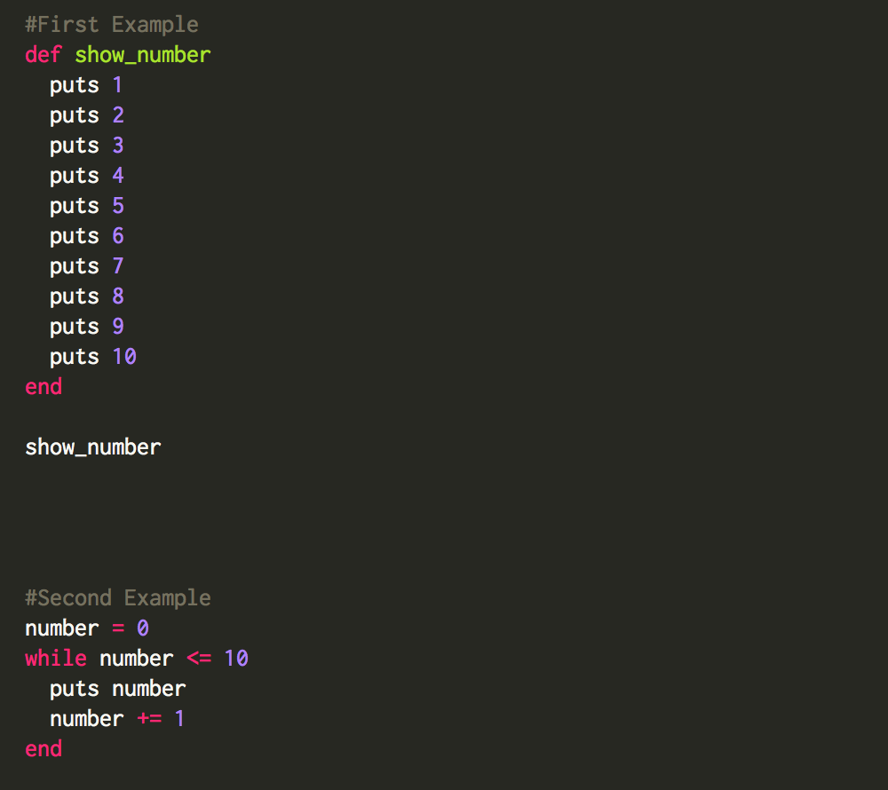
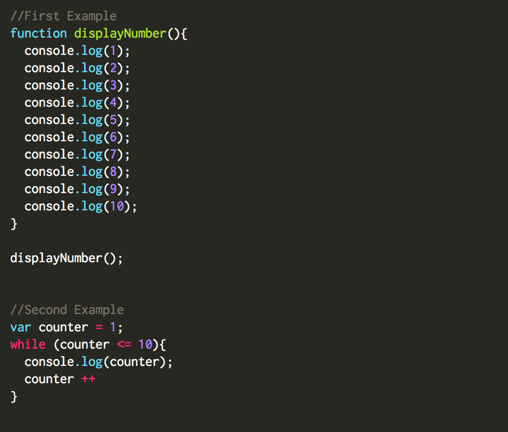
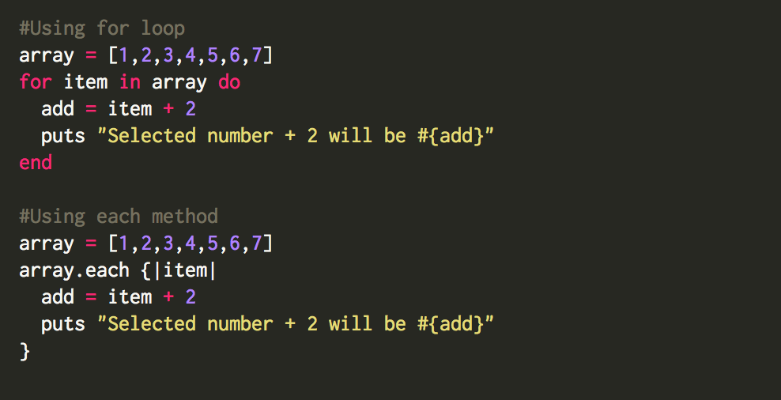
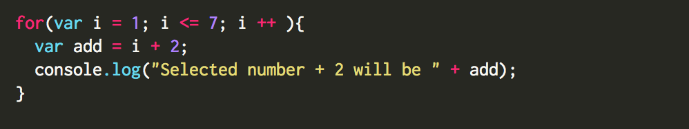

In programming a loop is the way to repeat the same action a certain amount of time. For example you want to display 10 random numbers on the screen. You could write a function that will give you a random number and then display it on the screen, but you will need to write this function 10 times, so why would we repeat the same code 10 times or what if we need to display 100 different numbers? In this case we can easily write a loop just once, and the loop will write the same function 10, 100 or 1000 times for us.
To show exactly how loop works we will take a real example. I will show you 2 most popular loops in Ruby and JavaScript - “while” loop and “for” loop. In Ruby you will mostly use “while” loop and in JavaScript you will mostly use “for” loop.
While loop in Ruby:
This is a simple example of method that prints numbers 1-10

In first example we were printing numbers manually, so you can see that I am repeating the same word “puts” 10 times, what is Ok for 10 numbers, but it’s not fun to repeat the same code 100 times or more. So for this case we can use while loop. First we need to create a variable and give it a value of the first integer that we want to print on the screen: number = 1 Then we are creating a loop that starts with “while” word and ends with “end” word. After “while” we are writing condition for our loop. while number <= 10 When condition of our loop is true, we will keep getting something as a result, and when condition is false our loop stops working. So in this example when our number = 10, loop makes a break.
While loop in JavaScript:

You can see that JavaScript example is pretty similar to Ruby. Syntax is a little different. In JavaScript to define a variable we use “var” word followed with variable name, loop condition we always keep in parentheses and body of the loop is in curly braces. But logic of creating a loop is the same.
For loop in Ruby:

For loop is a common kind of loop in other programming languages, but it functions a little bit different in Ruby. A Ruby “for” loop is more like an iterator and functions very similar to “each” method. Ruby programmers prefer to use “each” method, and the reason for this is that the variable used in “for” loop exists outside of the loop, when in iterators they exist inside of the block.
For loop in JavaScript:

For loop works very similar to while loop, but the code of this loop is cleaner and shorter.